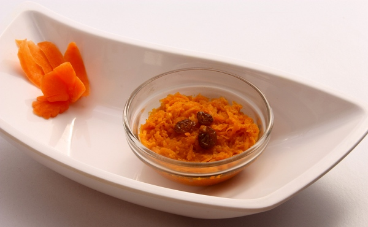
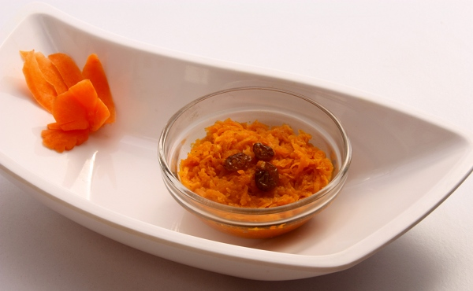

Baby Food Recipes


 

About the Book
 The book contains a set of 60 Indian Vegetarian recipes categorized based on the baby’s age. It takes you through the stages of the baby’s growth from 6 to 18 months. The recipes contain
notes to help you get a good end result and
nutritional value of the dish being prepared that will help you decide whats best for your baby.
The book contains a set of 60 Indian Vegetarian recipes categorized based on the baby’s age. It takes you through the stages of the baby’s growth from 6 to 18 months. The recipes contain
notes to help you get a good end result and
nutritional value of the dish being prepared that will help you decide whats best for your baby.
The book also contains information on how to introduce solids to the baby - the age at which you can start nutritive food of the right texture for your baby. Tips have been provided on how to tackle a fussy eater and a baby who dislikes milk.
In the first one year we often find babies facing problems like stomach ache due to gas, diarrhea, nappy rash, constipation, cold, etc; Instead of immediately seeking medical attention its advisable to try out some simple remedies at home. In fact, that is exactly what our grandmothers use to do during those days when doctors where not easily available. This book provides some of those home remedies that could help you relieve your baby of minor ailments at home. (This information however does not replace medical advice. Please consult a doctor for persistent issues.)
Once the baby is old enough to travel often parents feel like taking a break from the monotonous baby care routine. However, travelling with a baby can be quite a challenge as its risky to feed a little baby anything bought outside. Considering this, the book contains information on travel food. Recipes have been suggested of dishes which have a long shelf life and can be useful during journeys. Instant powders and mixes can help you whisk a filling meal anytime, anywhere.
With all the recipes provided to tickle the taste buds of your little one, its important to remember that we suggest you continue to breast feed your baby up to the age of 2 years. The dishes mentioned here are not intended to replace breast milk which is the best food for your baby. The book contains details on the benefits of breast feeding. Please read through it before deciding when to wean your baby off breast milk.
Buy the Book
This book will be available as a kindle e-book shortly on Amazon. Do register here to get notified when the book becomes available. You can download it on kindle and read it at your convenience. Towards the end of 2012, if the world survives we will come out with a phyiscal hard copy.
|
60 Baby Food Recipes |

|